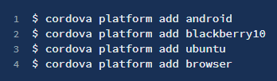

Apache Cordova:
I) RESUMEN.
La tecnología Apache Cordova (anteriormente conocido como PhoneGap) permite compilar un único código Web (con HTML, CSS, JavaScript, etc.) como si fuera una aplicación nativa para móvil. Es decir, con un solo desarrollo web es posible obtener aplicaciones nativas para diferentes plataformas destino como Android, iOS, Windows Phone, etc.
¿Quienes pueden usar Apache Cordova?
1. Un desarrollador móvil y deseas extender una aplicación a través de más de una plataforma, sin tener que reimplementarlo con herramientas y lenguajes de cada plataforma.
2. Un desarrollador web que desea implementar una aplicación web que se envasa para su distribución en varias apps store.
3. Un desarrollador móvil interesado en que se mezclen los componentes de la aplicación nativa con un WebView (ventana del navegador especial) que puede tener acceso a las API del nivel de dispositivo, o si quiere desarrollar una interfaz de un plugin entre componentes de un WebView y nativos.
A) Introducción.
Apache Cordova es un framework de código abierto para el desarrollo de aplicaciones para móviles. Su principal característica es ser multiplataforma, es decir, con un solo código de aplicación podemos utilizarlo en multitud de plataformas móviles, como Android, iOS o Windows Phone.
Funcionamiento General.
El núcleo de las aplicaciones se crea utilizando lenguajes de programación Web, como JavaScript, HTML5, CSS3, y con la ayuda de otros frameworks de desarrollo y de la propia API de Cordova. Esta API nos permite acceder mediante código JavaScript a características nativas del móvil, como, por ejemplo: Acelerómetro, cámara, contactos, eventos, geolocalización, redes o almacenamiento.
Posteriormente, y para cada una de las plataformas móviles para las que queramos generar nuestra aplicación, tendremos que incluir este núcleo Web como parte de la aplicación nativa. De esta forma podremos generar una aplicación "nativa" para cada plataforma móvil aprovechando para todas ellas el mismo núcleo de la aplicación.
Las aplicaciones desarrolladas con Apache Cordova se consideran aplicaciones híbridas. Una aplicación es híbrida cuando es una aplicación nativa con una capa intermedia de herramientas que hacen uso de otros lenguajes de programación.
Por el contrario, se considera nativa cuando ha sido desarrollada íntegramente utilizando la API y lenguaje de programación que proporciona la compañía que vende el producto. Esta técnica de programación tiene varias ventajas: el usuario sentirá que la aplicación es parte del sistema operativo, nos permitirá distribuir la aplicación como una aplicación nativa, y además nos ahorrará MUCHÍSIMO trabajo.
B) ¿Cómo trabaja Apache Cordova?
El esquema básico de funcionamiento de Cordova es el siguiente:
1. Construir la aplicación usando estándares Web: HTML, HTML 5, CSS, CSS3, JavaScript o haciendo uso de otros frameworks para el desarrollo de aplicaciones Web.
2. Combinar la aplicación Web con Cordova, esto nos dará acceso a las características nativas de los dispositivos móviles.
3. Configurar la aplicación en cada una de las plataformas para las que queramos generar la aplicación nativa.
A continuación, se puede apreciar un esquema de este proceso:
C) Soporte.
Con Cordova es posible desarrollar aplicaciones para los siguientes sistemas operativos para móviles:
• Android
• iOS
• Blackberry 10.
• WP8.
• Ubuntu.
• Windows.
Permite el acceso a las características nativas o hardware de todas estas plataformas a través de una API en JavaScript que se comunica con el dispositivo. Las características a las que nos permite acceder son:
• Acelerómetro.
• Estado de la batería.
• Cámara.
• Brújula.
• Estado de la conexión.
• Datos del dispositivo.
• Gestión de archivos.
• Geolocalización.
• Navegador.
• Sistema de notificaciones.
• Pantalla de bienvenida o Splash Screen.
• Almacenamiento.
• Vibrador.
Sin embargo, no todas las plataformas soportan el acceso a todas las características nativas desde una aplicación de este tipo. Los principales sistemas operativos para móvil actuales (Android, iOS, WP) no presentan apenas problemas (aunque sí algunas particularidades de configuración), pero otros como Tizen o Firefox OS no permiten el acceso completo.
II) COMANDOS
A) Línea de Comandos.
Una vez tenemos instalado Node.Js y Cordova ya podemos crear nuestra primera aplicación. Pero para ello antes debemos conocer el funcionamiento de la interfaz de línea de comandos (CLI) de Cordova, el cual utilizaremos para realizar muchas operaciones, como por ejemplo crear nuevos proyectos, compilar, ejecutar, emular, etc. A continuación, veremos las opciones más importantes de las que disponemos:
1. Ayuda, para obtener ayuda de todos los comandos disponibles y su sintaxis tenemos que ejecutar:

2. Si queremos ver la ayuda detallada sobre un comando usaremos:
3. Si queremos obtener un informe con toda la información detallada de un proyecto podemos ejecutar el siguiente comando:
III) GENERALIDADES.
A) Gestión de Plataformas.
Antes de poder compilar el proyecto tenemos que especificar las plataformas para las cuales se va a generar. Las plataformas disponibles dependerán del sistema operativo que utilicemos, si soporta el SDK en cuestión o si lo tiene instalado (y si no lo tiene lo tendremos que instalar). En general soporta las siguientes combinaciones:
Plataforma Android:
Veremos cómo configurar su entorno SDK para desplegar aplicaciones Cordova para dispositivos Android y cómo utilizar opcionalmente Android centrado en herramientas de línea de comandos en su flujo de trabajo de desarrollo. Tienes que instalar el SDK de Android sin importar si desea utilizar estas herramientas plataforma centrada en la shell o multiplataforma Cordova CLI para el desarrollo.
Requisitos y Apoyo:
Cordova para Android requiere el SDK de Android que puede ser instalado en sistema operativo OS X, Linux o Windows. Soporta Android 4.0 (empezando por Android API nivel 14) y superiores. Como regla general, las versiones de Android se convierten soportadas por Cordova por debajo del 5% en el tablero de distribución de Google. Las versiones de Android antes de las API de nivel 10, y las versiones 3.x (panal, los niveles API 11-13) caen significativamente por debajo de ese umbral de 5%.
IV) AÑADIR PLATAFORMAS
A) Agrega una plataforma especifica o varias a la vez.
1. Para añadir una plataforma para la cual queremos compilar nuestro proyecto usaremos el siguiente comando:
2. Si escribimos "platforms" , en plural, en lugar de "platform" , también funcionará, ya que este comando es un alias. Por ejemplo, en un Linux podremos añadir las siguientes plataformas a nuestro proyecto:

La plataforma "browser" es una plataforma especial (disponible en todos los sistemas operativos) que nos perimitirá depurar nuestras aplicaciones en el navegador, no sólo mostrando la apariencia del código web sino también permitiéndonos usar algunos de los plugins que veremos más adelante.
B) Listar Plataformas.
1. Para obtener un listado con las plataformas disponibles para nuestro sistema operativo además de un listado con las plataformas que ya hemos añadido a nuestra aplicación tenemos que ejecutar el comando:
Lo que nos mostraría (en ambos casos) un resultado similar al siguiente:
C) Eliminar una Plataforma.
Para eliminar una plataforma añadida podemos ejecutar alguno de los siguientes comandos (los cuales son equivalentes):
D) Contenido de la carpeta "platforms"
• Al añadir una plataforma o eliminarla, únicamente estamos trabajando sobre la carpeta "platforms" de nuestro proyecto. Al añadir una nueva se genera un subdirectorio con el nombre de la plataforma en cuestión, con el código fuente para esa plataforma.
• Cada vez que se compile o ejecute el proyecto (como veremos más adelante) se copiará el contenido de la carpeta "www" (la cual contiene el código de nuestro proyecto) a una subcarpeta de cada plataforma (borrando todo lo que hubiese en ella). Por ejemplo, para Android se copiaría en la ruta “platforms/android/assets/www/” y para iOS en la ruta “platforms/ios/www.”
• Por este motivo es importante que no modifiquemos el contenido de nuestro proyecto o aplicación directamente en la carpeta platforms, ya que se borrará en la siguiente compilación. Cualquier cambio que queramos hacer lo tendremos que realizar siempre dentro de la carpeta base www .
V) CONFIGURACIÓN.
A) Explicación.
Cordova permite configurar nuestras aplicaciones desde un fichero centralizado para indicar, por ejemplo, el icono de la aplicación, una imagen o splashcreen de inicio, los plugins a utilizar, etc. También veremos cómo personalizar nuestra aplicación para cada una de las plataformas destino mediante la utilidad de merges .
B) Fichero de Configuración.
En cada proyecto se incluye un fichero de configuración config.xml (situado en la carpeta raíz del proyecto) que nos permite establecer las principales opciones de configuración de nuestra aplicación de forma global (para todas las plataformas destino).
Al compilar un proyecto (mediante el comando build o run del CLI ) se crean versiones específicas de este fichero de configuración para cada plataforma, lo que nos permite establecer configuraciones más especializadas. La ruta donde el fichero es copiado varía dependiendo de la plataforma, por ejemplo:
Elementos de configuración principales:
A continuación, se muestran las primeras líneas del fichero config.xml generado por fecto al crear un nuevo proyecto de Cordova. Esta configuración es compatible para todas las plataformas:
Donde:
• "widget" : su atributo id especifica el paquete de la aplicación (usando el reverse-domain-name ), y su atributo version es el número completo de versión de la app (siguiendo la notación major/minor/patch, ver más información en la sección "Versión de la aplicación" ).
• "name" : especifica el nombre del proyecto y de la app, es el que aparecería al instalar la app junto a su icono y en los markets.
• "description" y "author" : son metadatos e información de contacto que se utilizará al publicar la app en los markets.
• "content2" : es un atributo opcional para indicar la página inicial de nuestro código. Por defecto se utilizará index.html .
• "access" : define un conjunto de dominios externos a los que se le permite acceder. Por defecto, al indicar * se le permite acceder a cualquier servidor. Para más información consultar la ayuda sobre Domain Whitelist.
• "allow-intent" : Controla las URLs que la aplicación puede pedir al sistema que abra. De forma predeterminada, no se permiten URLs externas. En el ejemplo superior se indica "...", pero por defecto se añadirán seis tipos de URLs permitidas: http, https, tel, SMS, mailto y geo .
• "platform" : En el fichero de configuración por defecto también encontraremos dos secciones "platform" , las cuales nos sirven para indicar opciones de configuración específicas de una plataforma. En el ejemplo se añade un intent adicional para Android y otro para iOS.
• "engine" : Mediante esta etiqueta se indican las plataformas añadidas y la versión concreta que se ha instalado. Al crear un proyecto por defecto no aparecerá ninguna.
• "plugin" : La etiqueta plugin especifica los plugins instalados junto con su versión.
VI) ICONOS.
A) Explicación.
Los iconos se pueden especificar utilizando la etiqueta
Donde
• src : (requerido) localización de la imagen relativa a la carpeta del proyecto.
• platform: (opcional) plataforma para la que se utilizará el icono.
• width: (opcional) ancho en píxeles.
• height: (opcional) alto en píxeles.
• density: (opcional) Densidad del icono (usado solo en Android).
1. Para establecer un icono que se utilizará en todas las plataformas podemos establecer la siguiente configuración:
2. Podemos utilizar tantas etiquetas como sea necesario para establecer los iconos para cada plataforma, incluso podemos indicar varios para una misma plataforma con distintos tamaños o densidades. Por ejemplo:
3. O si queremos, para clarificar el fichero de configuración, también podemos agrupar estas etiquetas por plataforma, por ejemplo:
4. Otro ejemplo para establecer todos los iconos de iOS:
VII) ALMACENAMIENTO.
A) Explicación.
Para el almacenamiento de la información la opción más sencilla es utilizar el "localStorage" , que es una característica nativa de HTML 5 . Esta utilidad nos permitirá almacenar datos tipo cadena con el formato de pares "clave / valor" , es decir, usaremos una clave para indexar cada uno de los valores.
Podemos utilizar esta herramienta utilizando JavaScript desde cualquier parte de nuestro código. Simplemente tendremos que usar la variable "window.localStorage" y una serie de métodos para almacenar, recuperar o eliminar la información:
Como podemos ver, esta herramienta nos permite almacenar nuestra información de forma muy sencilla, y además funcionará en todas las plataformas destino de Cordova. Como contrapartida podemos decir que solo permite almacenar cadenas (o datos serializados), que no es óptimo cuando queremos trabajar con muchos datos, y que tiene un límite de almacenamiento de 5Mb .
Como alternativa podemos recurrir a otra herramienta nativa como WebSQL o IndexedDB, que no tienen estas limitaciones ni desventajas de almacenamiento, pero que sin embargo no están soportadas en todas las plataformas. Una mejor alternativa cuando queremos una herramienta más potente para almacenar nuestros datos es utilizar un plugin como "cordova-SQLite-storage".
VIII) EVENTOS.
La librería de Cordova incluye una serie de eventos JavaScript a los cuales podemos escuchar para lanzar determinadas acciones cuando se produzcan estos eventos. A continuación, se incluye una tabla con la lista de los eventos incluidos por defecto en la librería y las plataformas que los soportan:
.png)
Además, podemos instalar plugins que nos darán acceso a más tipos de eventos. Por ejemplo, si instalamos el plugin para el control de la batería (org.apache.cordova.battery-status) se añadirán los siguientes eventos:
- · batterycritical.
- · batterylow.
- · batterystatus.
O si instalamos el plugin para obtener información de la red (org.apache.cordova.network-information)
- · online.
- · offline.
-
A) Uso de Eventos.
En general todos los eventos se utilizan de la misma forma: definiendo un listener en JavaScript que se lanzará cada vez que se produzca el evento. Sin embargo, para poder añadir este listener es importante que se haya terminado de cargar tanto el código web como la librería de Cordova, ya que en otro caso no funcionaría.
En primer lugar, tendremos que esperar a que haya terminado de cargar la propia web, para esto añadiremos el evento "onload" a la etiqueta HTML "<body>" de la forma: <body onload="onLoad()">.
Esto producirá que se llame a la función JavaScript “onLoad” cuando haya finalizado la carga. Dentro de esta función “onLoad” tendremos que añadir un listener al evento “deviceready” para esperar que se haya terminado de cargar la librería de Cordova.
El uso de este evento es esencial para cualquier aplicación con Cordova y lo tendremos que utilizar de forma inicial para asegurarnos de que la API se ha cargado completamente. A continuación, se incluye un ejemplo de uso:
-
· nombre-evento: Es el evento al que queremos escuchar, por ejemplo “pause”, “resume”, etc.
- · funcionCallback: Es la función que se llamará cuando el evento se produzca.
-
B) Añadir un Plugin.
Para añadir un plugin a un proyecto simplemente tenemos que indicar el repositorio o nombre del plugin que deseemos y el sistema se encargará de descargarlo e instalarlo. A continuación, se incluye una lista de los plugins oficiales más utilizados y como tendríamos que instalarlos.
→ Obtener información del dispositivo:
.png)
→ Información sobre la conexión y la batería:
.png)
→ Acelerómetro, brújula y geolocalización:
.png)
→ Cámara, reproducción y captura de contenidos multimedia:
.png)
→ Acceso a ficheros del dispositivo y de la red:
.png)
C) Ver los Plugins Instalados.
Para ver los plugins añadidos al proyecto actual podemos usar alguno de los siguientes comandos (todos son equivalentes), los cuales mostrarán un listado de paquetes instalados, junto con su versión y nombre:
.png)
D) Eliminar un Plugin.
Para eliminar un plugin simplemente tenemos que referirnos a él por el mismo nombre del paquete que utilizamos para su instalación (o que podemos ver si ejecutamos cordova plugin ls). Por ejemplo, para eliminar el soporte a la consola de depuración ejecutaríamos:
.png)
X) USO DE LA API.
-
A) Información del dispositivo (cordova-plugin-device)
Este plugin permite obtener información del dispositivo, como el modelo, el sistema operativo, etc. Para su utilización tenemos que esperar que se cargue la API de Cordova y ya podremos acceder a estos valores a través de las propiedades de la variable “device”, por ejemplo:
.png)
Las propiedades que podemos utilizar son:
- · device.cordova: Obtiene la versión de Cordova.
- · device.model: Obtiene el nombre o modelo del dispositivo.
- · device.platform: Obtiene el nombre del sistema operativo.
- · device.uuid: Devuelve el Universally Unique Identifier (UUID) del dispositivo.
- · device.version: Obtiene la versión del sistema operativo utilizado.
-
B) Información sobre la conexión (cordova-plugin-network-information)
Este plugin proporciona información sobre el tipo de conexión a la red y además añade eventos para saber cuándo el dispositivo se conecta o se desconecta de la red.
Para obtener información sobre el tipo de conexión utilizamos el objeto connection.type, el cual podrá contener los siguientes valores indicando el tipo de conexión:- → Connection.UNKNOWN.
- → Connection.ETHERNET.
- → Connection.WIFI.
- → Connection.CELL_2G.
- → Connection.CELL_3G.
- → Connection.CELL_4G.
- → Connection.CELL.
- → Connection.NONE.
XI) METODOLOGÍA.
A) Instalación de node.js
-
2) Comprobar que se ha instalado correctamente con el comando cordova –v.
.png)
-
3) Crear un proyecto de prueba con el comando cordova create “nombre_del_proyecto”
.png)
-
C) Instalación del JDK de Java.
1) Descargar el jdk de Java para Windows en el siguiente enlace: https://www.oracle.com/java/technologies/javase/javase-jdk8-downloads.htmlsegún la arquitectura del computador.
.png)
-
2) Aceptar los termino de licencia y clic en Download.
.png)
-
3) Iniciar sesión con una cuenta de Oracle, en caso de no tener crear una nueva cuenta.
.png)
-
4) Ejecutar el instalador, el proceso de instalación es sencillo, solo presionar en Next hasta finalizar.
.png)
5) Crear una variable de usuario en Path con la ruta donde se encuentra la carpeta bin el jdk.
.png)
-
6) Crear una variable del sistema con el nombre JAVA_HOME y la ruta donde se encuentra el jdk.
.png)
7) Comprobar que se ha instalado correctamente con el comando java –version.
.png)
D) Instalación de Android Studio.
1) Descargar Android Studio para Windows en el siguiente enlace: https://developer.android.com/studio
.png)
-
2) Ejecutar el instalador, igualmente el proceso es sencillo solo presionar en Next hasta finalizar.
.png)
3) Dejar marcada la casilla y clic en Finish.
.png)
4) Para instalar el SDK de Android clic en Next.
.png)
5) Se recomienda cambiar la ubicación del SDK para evitar problemas en la construcción del APK. Por ejemplo, crear una carpeta denominada ANDROID para guardar el SDK.
.png)
6) La instalación del SDK puede demorar varios minutos, una vez finalizado clic en Finish.
.png)
7) Crear dos variables de usuario en Path con las siguientes rutas:
- → C:\ANDROID\tools
.png)
- → C:\ANDROID\platform-tools
.png)
-
G) Compilación
1) Ejecutar el CMD desde el proyecto creado con anterioridad y ejecutar el comando cordova platform add android.
.png)
2) Cuando la aplicación este lista, para crear el APK ejecutar el comando cordova build android. Esta quedará guardada en: Nombre_del_proyecto\platforms\android\app\build\outputs\apk\debug
.png)
-
.png)
XII) CONCLUSIONES.
1) El núcleo de las aplicaciones se crea utilizando lenguajes de programación Web, como JavaScript, HTML5, CSS3, y con la ayuda de otros frameworks de desarrollo y de la propia API de Cordova. Esta API nos permite acceder mediante código JavaScript a características nativas del móvil, como, por ejemplo: Acelerómetro, cámara, contactos, eventos, geolocalización, redes o almacenamiento.
2) Cordova tiene varias ventajas: el usuario sentirá que la aplicación es parte del sistema operativo, nos permitirá distribuir la aplicación como una aplicación nativa, y además nos ahorrará muchísimo trabajo.
3) Posteriormente, y para cada una de las plataformas móviles para las que queramos generar nuestra aplicación, tendremos que incluir este núcleo Web como parte de la aplicación nativa. De esta forma podremos generar una aplicación "nativa" para cada plataforma móvil aprovechando para todas ellas el mismo núcleo de la aplicación.
.png)
Al ejecutar el código anterior en primer lugar se llamaría a la función “onLoad” cuando se termine de cargar la propia Web. Dentro de esta función se define el listener al evento “deviceready”, el cual se lanzará cuando se haya terminado de cargar la librería de Cordova, llamando a la función “onDeviceReady”. Una vez se ha cargado la API de Cordova ya podremos añadir listeners a los eventos que queramos. Para suscribirnos a un evento utilizaremos el siguiente código:
.png)
Donde:
IX) PLUGINS.
Cordova, además de permitir encapsular aplicaciones Web y compilarlas como aplicaciones nativas para distintas plataformas móviles, nos brinda el acceso a características hardware de los dispositivos a través de su sistema de plugins. Por ejemplo, tenemos disponibles plugins para trabajar con la cámara, brújula, geolocalización, etc.
Estos plugins se pueden añadir a nuestros proyectos según los necesitemos mediante el CLI de Cordova. A partir de la versión 3.0 de Cordova, al crear un nuevo proyecto no incluye ningún plugin, por lo que si queremos alguno tendremos que añadirlo manualmente.
A) Gestión de Plugins.
· Buscar Plugins:
En la dirección "http://plugins.cordova.io" podemos consultar la lista completa de todos los plugins, incluyendo los que han sido desarrollados por la comunidad. Esta web nos permite buscar tanto por nombre como por descripción y además filtrar los resultados por plataforma, eligiendo por ejemplo que aparezcan solo los disponibles para Android, o para Android e iOS.
También es posible utilizar el CLI de Cordova para buscar plugins en este registro. Por ejemplo, para buscar un plugin para códigos de barras usaríamos:
.png)
1) Descargar la versión LTS de node.js para Windows en el siguiente enlace: https://nodejs.org/es/download/
.png)
2) Ejecutar el instalador y clic en Next.
.png)
3) Aceptar los términos de licencia y en las siguientes ventanas clic en Next.
.png)
4) En la ventana Tool for Native Modules marcar la casilla para instalar las herramientas que ayudan a compilar módulos nativos. Luego clic en Next y por último clic en Install.
.png)
5) Al finalizar la instalación al presionar en Finish, automáticamentese ejecutará un CMD y presionar cualquier tecla para continuar.
.png)
6) A continuación, se ejecutará automáticamente Windows Power Shell e instalará todos los componentes necesarios. Este proceso puede demorar varios minutos.
7) Comprobar que se ha creado una variable del sistema, para esto escribir variable en la búsqueda de Windows, seguido de: variable de entorno > variables del sistema > Path > Editar. Caso contrario crear manualmente.
.png)
8) Ejecutar en el CMD el comando node -v para comprobar que node.js se instaló correctamente.
.png)
9) Comprobar que npm está instalado con el comando npm -v.
.png)
B) Instalación de Apache Cordova.
1) Ejecutar CMD y escribir el comando npm install -g cordova.
.png)
8) Crear una variable de usuario con el nombre ANDROID_HOME y la ruta donde se encuentra el SDK.
.png)
E) Instalación de Gradle.
1) Descargar gradle en el siguiente enlace: https://services.gradle.org/distributions/ se debe escoger el archivo bin.
.png)
2) Extraer el archivo .zip, copiar en el Disco Local C y renombre esta carpeta como GRADLE.
3) Crear una variable de usuario con el nombre GRADLE_HOME y la ruta donde se encuentra este.
.png)
4) Comprobar que se ha instalado correctamente con el comando gradle –v.
.png)
F) Firma de Licencias.
1) Abrir el CMD desde la carpeta del SDK de Android > tools > bin, ejecutar el comando sdkmanager –licenses, después preguntará el sistema si desea revisar las firmas que no han sido aceptadas, a lo cual escribimos y (yes).
.png)
2) Son 7 licencias que se debe aceptar, una vez realizado esto tendremos lo siguiente:
.png)
-